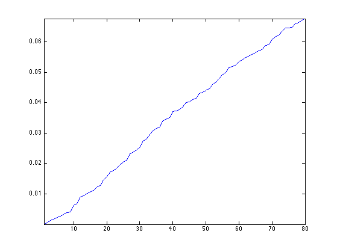
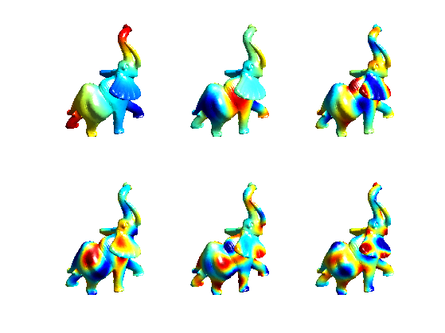
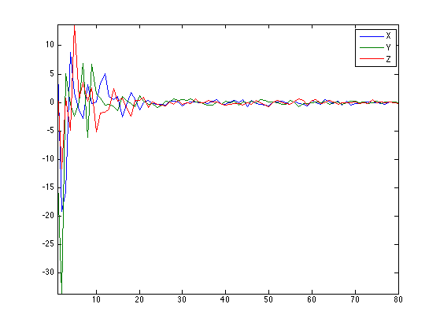
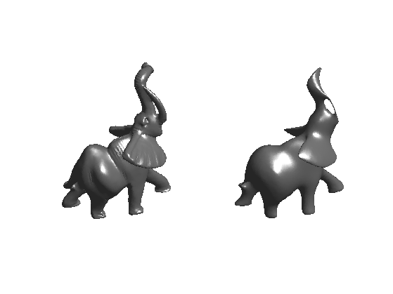
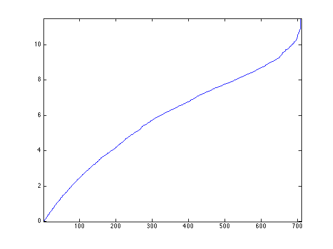
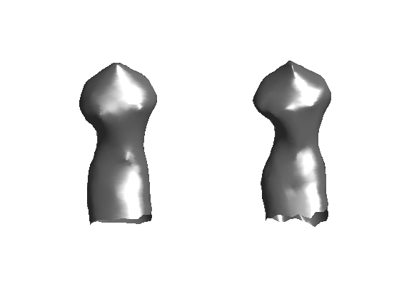
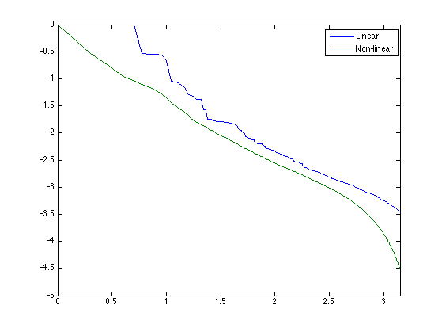
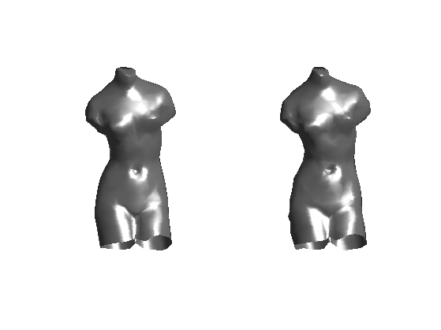
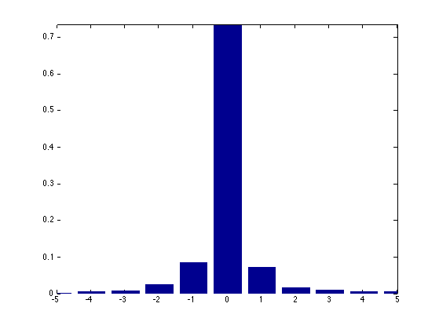
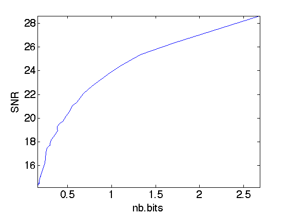

Fourier on Meshes
This tour explores the use of the eigenvectors of the Laplacian, for filtering and for compression.
Contents
Installing toolboxes and setting up the path.
You need to download the following files: signal toolbox, general toolbox and graph toolbox.
You need to unzip these toolboxes in your working directory, so that you have toolbox_signal, toolbox_general and toolbox_graph in your directory.
For Scilab user: you must replace the Matlab comment '%' by its Scilab counterpart '//'.
Recommandation: You should create a text file named for instance numericaltour.sce (in Scilab) or numericaltour.m (in Matlab) to write all the Scilab/Matlab command you want to execute. Then, simply run exec('numericaltour.sce'); (in Scilab) or numericaltour; (in Matlab) to run the commands.
Execute this line only if you are using Matlab.
getd = @(p)path(p,path); % scilab users must *not* execute this
Then you can add the toolboxes to the path.
getd('toolbox_signal/'); getd('toolbox_general/'); getd('toolbox_graph/');
Fourier Basis on Meshes
The Fourier basis are defined as the eigenvector of the Laplacian.
First load a mesh.
name = 'elephant-50kv';
[vertex,faces] = read_mesh(name);
options.name = name;
n = size(vertex,2);
The combinatorial laplacian is a linear operator (thus a NxN matrix where N is the number of vertices). It depends only on the connectivity of the mesh, thus on face only.
Compute edge list.
E = [faces([1 2],:) faces([2 3],:) faces([3 1],:)]; p = size(E,2);
Compute the adjacency matrix.
W = sparse( E(1,:), E(2,:), ones(p,1) ); W = max(W,W');
Compute the combinatorial Laplacian, stored as a sparse matrix.
D = spdiags(sum(W)', 0, n,n); L = D-W;
The eigenvector of this matrix forms an orthogonal basis of the vector space of signal of NxN values (one real value per vertex). Those functions are the extension of the Fourier oscillating functions to surfaces. For a small mesh (less than 1000) vertices, one can compute this set of vectors using the eig functions. For large meshes, one can compute only a small (e.g. 50) number of low pass eigenvectors using the sparse eigenvector extraction procedure, eigs.
Compute the eigenvectors.
nb = 80;
opts.disp = 0;
[U,S] = eigs(L,nb,'SM',opts);
S = diag(S);
Order the eigenvector by increasing frequencies.
[S,I] = sort(S, 'ascend');
U = real( U(:,I) );
Plot the eigenvalues. This corresponds to the spectrum of the triangulation. It depends only on the topology of the mesh.
clf;
plot(S); axis('tight');
 Display a sub-set of eigenvectors.
ilist = round(linspace(3,nb, 6)); tau=2.2; % saturation for display clf; for i=1:length(ilist) v = real(U(:,ilist(i))); v = clamp( v/std(v),-tau,tau ); options.face_vertex_color = v; subplot(2,3,i); plot_mesh(vertex,faces,options); shading interp; camlight; axis tight; colormap jet(256); end
Linear Approximation over the Fourier Domain
Linear approximation is obtained by keeping only the low frequency coefficient. This corresponds to a low pass filtering, since high frequency coefficients are removed.
Compute the projection of each coordinate vertex(i,:) on the small set of nb frequencies.
pvertex = vertex*U;
Display the spectrum pf.
clf; plot(pvertex'); axis('tight'); legend('X', 'Y', 'Z');
Reconstruct the mesh.
vertex1 = pvertex*U';
Compare before and after approximation.
clf; subplot(1,2,1); plot_mesh(vertex,faces); subplot(1,2,2); plot_mesh(vertex1,faces);
Exercice 1: (check the solution) Show the smoothed mesh for an increasing number of Fourier frequencies nb.
exo1;

Non-linear Approximation over the Fourier Domain
Non-linear approximation is obtained by keeping the largest magnitude coefficients. It is more efficient than linear approximation since the L2 error is reduced.
We study here the approximation on a small mesh, to be able to compute all the wavelet coefficients.
name = 'venus';
[vertex,faces] = read_mesh(name);
options.name = name;
n = size(vertex,2);
Compute the combinatorial laplacian operator L of the mesh.
E = [faces([1 2],:) faces([2 3],:) faces([3 1],:)]; W = sparse( E(1,:), E(2,:), ones(size(E,2),1) ); W = max(W,W'); L = spdiags(sum(W)', 0, n,n) - W;
Compute the full set of eigenvector.
[U,S] = eig(full(L));
S = diag(S);
[S,I] = sort(S, 'ascend');
U = real( U(:,I) );
Plot the eigenvalues.
clf;
plot(S); axis('tight');
 Exercice 2: (check the solution) Compute a best m-term non-linear approximation whith m=.1*n, by hard thresholding the Fourier coefficients using the correct threshold. Compare with linear m term approximation (use m/3 coefficient for each coordinate X/Y/Z).
exo2;
Linear: SNR=22dB Non-linear: SNR=24.2dB
Exercice 3: (check the solution) Compare the rate-distortion curve (log of error as a function of the log of the number of coefficients) for linear and non-linear approximation.
exo3;
Spectral Mesh Compression
Compression is obtained by quantizing the coefficients and entropic coding the resulting integer quantized coefficients.
Set the quantization level. The larger, the more aggressive the coding.
T = .05;
Compute the interger, quantized coefficients.
pvertexI = floor(abs(pvertex/T)).*sign(pvertex);
For decompression, we compute de-quantized values from pvertexI, which are chosen as the mid-point of each quantization bin.
pvertexQ = sign(pvertexI) .* (abs(pvertexI)+.5) * T;
Reconstruct the mesh from the de-compressed coefficients.
vertex1 = pvertexQ*U';
Display the result of decompression.
clf; subplot(1,2,1); plot_mesh(vertex,faces); subplot(1,2,2); plot_mesh(vertex1,faces);
To evaluate the number of bit needed to store pvertexI in a file, we do not use a real entropic coder (such as Huffman tree of an arithmetic coder), but rather use the lower bound of the entropy.
Compute the histogram of the coefficients.
t = min(pvertexI(:)):max(pvertexI(:)); h = hist( pvertexI(:), t ); h = max(h,1e-10); h = h/sum(h);
Display the histograms. Most of the coefficients have been quantized to 0.
close; clf; bar(t, h); axis([-5 5 0 max(h)]);
Compute the entropy.
E = -sum( log2(h).*h );
The number of bit per vecter is 3*E since one needs E bit in average to code an entry of pvertexI.
disp(['Nbr.bits per vertex = ' num2str(3*E,3)]); disp(['Error, SNR = ' num2str(snr(vertex,vertex1),3) 'dB']);
Nbr.bits per vertex = 5.18 Error, SNR = 32.7dB
Exercice 4: (check the solution) Perform the compression for several quantization steps T and display the rate distortion curve showing the SNR as a function of the number of bits.
exo4;